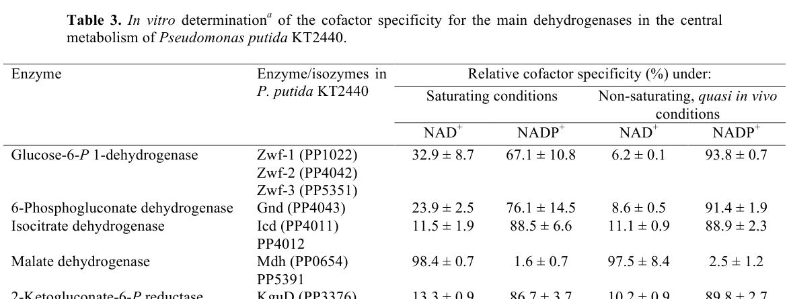

NAD-dependent malate dehydrogenase (EC 1.1.1.37) of the LDH/MDH superfamily. It is a soluble, cytoplasmic enzyme that catalyzes the reversible NAD(+)-linked oxidation of (S)-malate to oxaloacetate, generating NADH. The enzyme sits at the malate/oxaloacetate node of central carbon metabolism, providing the oxaloacetate-regenerating step of the tricarboxylic acid (TCA) cycle and contributing reducing equivalents to respiratory metabolism. In Pseudomonas putida KT2440, enzyme assays of cell-free extracts show strong specificity for NAD(+) over NADP(+) (~98% NAD+), consistent with a canonical TCA-cycle malate dehydrogenase. The protein adopts the two-domain LDH/MDH fold with an N-terminal NAD(P)-binding Rossmann domain and a C-terminal substrate-binding domain, with a conserved His proton-acceptor active site and Arg residues that recognize the substrate carboxylates.
| GO Term | Evidence | Action | Reason |
|---|---|---|---|
|
GO:0003824
catalytic activity
|
IEA
GO_REF:0000002 |
KEEP AS NON CORE |
Summary: Root-level molecular function term; correct but uninformative for an enzyme with a defined activity.
Reason: The gene product is an enzyme so catalytic activity is true, but this is a very general parent of the specific malate dehydrogenase activity (GO:0030060) and carries no specific information. Retained as non-core.
|
|
GO:0004459
L-lactate dehydrogenase (NAD+) activity
|
IEA
GO_REF:0000118 |
REMOVE |
Summary: TreeGrafter over-propagation from the LDH/MDH superfamily; this protein is a malate dehydrogenase, not a lactate dehydrogenase.
Reason: This IEA (TreeGrafter/PANTHER) annotation reflects an electronic mis-assignment within the shared LDH/MDH superfamily node. UniProt and InterPro (Malate_DH_type3, IPR011275) classify Q88Q44 as a malate dehydrogenase (EC 1.1.1.37, GO:0030060), and experimental assays in KT2440 measured malate dehydrogenase, not L-lactate dehydrogenase, activity. L-lactate dehydrogenase activity is not supported and is contradicted by the malate-specific function; this is an over-propagated electronic inference appropriate to remove.
|
|
GO:0006089
lactate metabolic process
|
IEA
GO_REF:0000118 |
REMOVE |
Summary: TreeGrafter over-propagation paired with the erroneous L-lactate dehydrogenase activity call; the gene functions in the TCA cycle, not lactate metabolism.
Reason: This process annotation derives from the same incorrect LDH-superfamily grafting as GO:0004459. The enzyme acts on malate/oxaloacetate in the TCA cycle, not on lactate. Over-propagated electronic inference, appropriate to remove. The correct process is tricarboxylic acid cycle (GO:0006099), captured by UniProt keyword but missing from GOA.
|
|
GO:0016491
oxidoreductase activity
|
IEA
GO_REF:0000002 |
KEEP AS NON CORE |
Summary: Correct high-level oxidoreductase parent; uninformative relative to the specific malate dehydrogenase activity.
Reason: True but general parent of GO:0030060. Retained as non-core background.
|
|
GO:0016616
oxidoreductase activity, acting on the CH-OH group of donors, NAD or NADP as acceptor
|
IEA
GO_REF:0000002 |
KEEP AS NON CORE |
Summary: Correct intermediate-level parent describing NAD(P)-linked CH-OH oxidoreductases; more specific malate dehydrogenase activity is preferred as core.
Reason: Accurately describes the enzyme class (NAD-linked CH-OH oxidoreductase) but is a parent of the specific GO:0030060 L-malate dehydrogenase (NAD+) activity. Retained as non-core.
|
|
GO:0030060
L-malate dehydrogenase (NAD+) activity
|
IEA
GO_REF:0000120 |
ACCEPT |
Summary: Correct core molecular function, matching EC 1.1.1.37 and the UniProt catalytic activity (RHEA:21432, (S)-malate + NAD+ = oxaloacetate + NADH + H+).
Reason: This is the core, well-supported molecular function. The UniProt RHEA/EC mapping and InterPro Malate_DH_type3 domain agree, and KT2440 cell-free extract assays demonstrated strong NAD+-specific malate dehydrogenase activity.
|
|
GO:0030060
L-malate dehydrogenase (NAD+) activity
|
ISS
GO_REF:0000024 |
ACCEPT |
Summary: ISS transfer of the core malate dehydrogenase activity from a characterized ortholog (UniProtKB:P61889); consistent with all other evidence.
Reason: Sequence-similarity transfer of the core function from an experimentally characterized MDH ortholog. Concordant with the EC mapping, InterPro family, conserved active-site/binding residues, and KT2440 enzyme assay data. Represents the core function of the gene.
|
Q: Is mdh (PP_0654) the sole NAD-dependent malate dehydrogenase in P. putida KT2440, or do malate:quinone oxidoreductase (Mqo) isozymes and malic enzymes provide redundant routes through the malate node?
Experiment: Purify recombinant PP_0654 and determine steady-state kinetic constants (Km, kcat) for L-malate, oxaloacetate, NAD+ and NADH to confirm the canonical ordered Bi-Bi mechanism and quantify directional preference under physiological conditions.
Experiment: Construct a clean mdh (PP_0654) deletion and assess growth on TCA-cycle and gluconeogenic carbon sources, with 13C-metabolic flux analysis to test rerouting of malate via malic enzyme and the glyoxylate shunt.
The research report should be a detailed narrative explaining the function, biological processes, and localization of the gene product. Citations should be given for all claims.
You should prioritize authoritative reviews and primary scientific literature when conducting research. You can supplement
this with annotations you find in gene/protein databases, but these can be outdated or inaccurate.
We are specifically interested in the primary function of the gene - for enzymes, what reaction is catalyzed, and what is the substrate specificity? For transporters, what is the substrate? For structural proteins or adapters, what is the broader structural role? For signaling molecules, what is the role in the pathway.
We are interested in where in or outside the cell the gene product carries out its function.
We are also interested in the signaling or biochemical pathways in which the gene functions. We are less interested in broad pleiotropic effects, except where these elucidate the precise role.
Include evidence where possible. We are interested in both experimental evidence as well as inference from structure, evolution, or bioinformatic analysis. Precise studies should be prioritized over high-throughput, where available.
The UniProt target Q88Q44 corresponds to Pseudomonas putida KT2440 Mdh encoded by mdh / PP_0654, a soluble, NAD-dependent malate dehydrogenase positioned at the malate ⇌ oxaloacetate node of central carbon metabolism. Experimental evidence in KT2440 cell-free extracts demonstrates strong NAD+ preference (~98% NAD+ vs ~2% NADP+ under multiple assay regimes). Recent 2023–2024 multi-omics studies in P. putida metabolic engineering and adaptation track Mdh (PP_0654) abundance/flux and show that removing or down-modulating this node can re-route malate away from oxaloacetate, engage the glyoxylate shunt, and reshape redox/cofactor demands—strategies leveraged for bioproduction and non-native substrate utilization. (nikel2015pseudomonasputidakt2440 pages 21-25, eng2023ensembleanditerative pages 11-13, dvorak2023genomicandmetabolic pages 41-45, dvorak2023genomicandmetabolic pages 20-22)
Gene symbol ambiguity resolution. “mdh” can denote different malate dehydrogenase types (cytosolic/mitochondrial in eukaryotes; NAD- vs quinone-dependent oxidoreductases; D-malate dehydrogenases). For this request, multiple independent P. putida KT2440/EM42 studies explicitly refer to malate dehydrogenase Mdh (PP_0654) in central metabolism, matching the UniProt identity and avoiding cross-organism symbol confusion. (dvorak2023genomicandmetabolic pages 41-45, eng2023ensembleanditerative pages 11-13)
Consistency with UniProt annotation. Experimental cofactor specificity for Mdh (PP_0654) in KT2440 supports classification as a canonical NAD-dependent malate dehydrogenase (EC 1.1.1.37), consistent with UniProt’s “probable malate dehydrogenase” assignment. (nikel2015pseudomonasputidakt2440 pages 21-25, nikel2015pseudomonasputidakt2440 media 2fe70d77)
Malate dehydrogenase (MDH; EC 1.1.1.37) catalyzes the reversible reaction:
L-malate + NAD+ ⇌ oxaloacetate + NADH + H+. (lorenzo2024catalyticmechanismand pages 1-2)
This enzyme is ubiquitous and central to metabolism; it is commonly positioned to supply oxaloacetate (OAA) to the TCA cycle and to generate NADH that feeds respiratory energy metabolism. (lorenzo2024catalyticmechanismand pages 1-2)
A recent mechanistic review (Essays in Biochemistry, 2024) summarizes MDH as following an ordered Bi–Bi (compulsory order) kinetic mechanism (NAD+ binds before malate; products released oxaloacetate then NADH) and highlights active-site loop closure as a key determinant of specificity and catalysis. (lorenzo2024catalyticmechanismand pages 5-7, lorenzo2024catalyticmechanismand pages 7-8)
The review also details conserved catalytic features: a His–Asp catalytic dyad and multiple Arg residues that recognize substrate carboxylates, and reports a large discrimination against non-cognate substrates (e.g., oxaloacetate reduced far faster than pyruvate). (lorenzo2024catalyticmechanismand pages 2-5, lorenzo2024catalyticmechanismand pages 1-2)
Thermodynamically, the equilibrium can strongly favor L-malate/NAD+ under physiological conditions (example values in the review: Keq′ ≈ 2.9×10−5 at 38°C, pH 7; ΔG ≈ +27 kJ/mol), reinforcing that cellular directionality is often set by network context (substrate/product levels and coupling), not just intrinsic enzyme preference. (lorenzo2024catalyticmechanismand pages 1-2)
In P. putida KT2440, Mdh was assayed in cell-free extracts from exponential-phase cultures grown on glucose minimal medium. Under saturating conditions, Mdh (PP_0654) showed 98.4 ± 0.7% relative specificity for NAD+ vs 1.6 ± 0.7% for NADP+; under quasi in vivo/non-saturating conditions, 97.5 ± 8.4% NAD+ vs 2.5 ± 1.2% NADP+. (nikel2015pseudomonasputidakt2440 pages 21-25, nikel2015pseudomonasputidakt2440 media 2fe70d77)
These data strongly support that the physiological cofactor for PP_0654 is NAD(H) rather than NADP(H), consistent with canonical TCA-cycle-linked MDH activity. (nikel2015pseudomonasputidakt2440 pages 21-25)
While direct kinetic constants (Km, kcat) for P. putida PP_0654 were not found in the retrieved pages, the 2024 review compiles representative MDH kinetics across organisms and emphasizes typical patterns: KM(OAA) is commonly lower than KM(L-malate), and KM(NADH) is lower than KM(NAD+), consistent with cellular metabolite availability and the common practice of studying OAA reduction in vitro. (lorenzo2024catalyticmechanismand pages 5-7)
Recent P. putida studies explicitly annotate Mdh (PP_0654) as part of the TCA cycle and track its abundance as a central node enzyme during adaptation to non-native carbon sources. (dvorak2023genomicandmetabolic pages 41-45)
In a 13C-metabolic flux analysis (MFA) of engineered P. putida grown on D-xylose, malate dehydrogenase is identified among high-flux central dehydrogenase reactions, alongside Zwf/Gnd and pyruvate dehydrogenase, with discussion of flux through the malate/OAA node in relation to the glyoxylate shunt and redox demands. (dvorak2023genomicandmetabolic pages 20-22)
During xylose metabolism adaptation in P. putida, MFA and proteomics indicate engagement of the glyoxylate shunt (AceA/GlcB) and suggest interplay between redox balance and shunt activity; different evolved lineages show different patterns of TCA vs glyoxylate usage, with Mdh abundance changing modestly in one lineage and increasing in another where it is argued to support TCA-cycle functioning. (dvorak2023genomicandmetabolic pages 20-22, dvorak2023genomicandmetabolic pages 41-45)
In the 2024 Nature Communications xylose study, the authors explicitly state that upregulation of … malate dehydrogenase Mdh (with other TCA enzymes) “supported functioning of the TCA cycle,” consistent with an adaptive shift toward oxidative metabolism when the glyoxylate shunt is downregulated (e.g., AceA down in the gnd− lineage). (dvorak2024syntheticallyprimedadaptationof pages 11-12)
No direct localization experiment for PP_0654 was found in the retrieved sources. However, the KT2440 evidence comes from cell-free extract enzyme assays and central metabolism mapping, supporting the inference that PP_0654 encodes a soluble cytosolic (cytoplasmic) enzyme, typical for bacterial NAD-dependent MDH participating in the TCA cycle. This should be treated as an inference rather than experimentally proven localization within the cited texts. (nikel2015pseudomonasputidakt2440 pages 5-6, lorenzo2024catalyticmechanismand pages 1-2)
A 2024 Nature Communications study used metabolic engineering plus adaptive laboratory evolution to enable and improve P. putida growth on the lignocellulosic sugar D-xylose, with multi-level analysis (including proteomics). In this context, Mdh is part of the tracked central metabolism and is discussed as supporting TCA cycle operation in one evolved lineage. (dvorak2024syntheticallyprimedadaptationof pages 10-11, dvorak2024syntheticallyprimedadaptationof pages 11-12)
Quantitative phenotype data relevant to central rewiring (though not uniquely attributable to mdh alone) show dramatic lag-phase improvements depending on regulatory-genotype context: an engineered strain PD855 exhibited lag phase 4.94 ± 0.39 h, whereas a comparable strain with functional hexR showed lag phase 20.80 ± 0.31 h. This provides a concrete example of how central carbon regulation reshapes the growth phenotype in the metabolic network in which Mdh operates. (dvorak2024syntheticallyprimedadaptationof pages 11-12)
A 2023 systems engineering preprint analyzed growth-coupling designs for producing the blue pigment indigoidine from lignin-related carbon (p-coumarate) in P. putida KT2440. In Design 1 strains, proteomics explicitly reported zero protein counts for Mdh/PP_0654, consistent with engineered deletions affecting the malate→oxaloacetate step. (eng2023ensembleanditerative pages 11-13)
Quantitative multi-omics in these strains indicate compensatory rerouting at adjacent nodes: for example, a fumarate→malate isozyme (PP_0897) was 25–30% higher than WT while Mqo3 was reduced to 9–26% of WT; malic enzyme MaeB (malate→pyruvate) was reported at ~2-fold higher protein abundance, consistent with diverting malate away from oxaloacetate production; the glyoxylate shunt enzymes AceA and GlcB were strongly upregulated (reported as multiple-fold changes). (eng2023ensembleanditerative pages 11-13)
Metabolomics further support bottlenecks or rerouting around the fumarate/malate/OAA region (e.g., fumarate 2.7-fold higher in one strain vs WT) with downstream shifts in TCA-linked metabolites and nitrogen assimilation precursors (e.g., AKG and glutamate changes) relevant to indigoidine biosynthesis. (eng2023ensembleanditerative pages 13-16)
The strongest quantitative functional data directly tied to PP_0654 in this evidence set are the NAD-vs-NADP specificity measurements in KT2440 extracts (Table 3 in Nikel et al., 2015). (nikel2015pseudomonasputidakt2440 pages 21-25, nikel2015pseudomonasputidakt2440 media 2fe70d77)
In the indigoidine engineering context, quantitative proteomics showed Mdh/PP_0654 undetectable (zero counts) and reported numeric relative changes in neighboring nodes (percent-of-WT and ~2-fold values) and glyoxylate shunt upregulation; metabolomics reported a 2.7-fold fumarate increase and multiple fold-changes in central metabolites (e.g., AKG, glutamate, glutamine). (eng2023ensembleanditerative pages 11-13, eng2023ensembleanditerative pages 13-16)
The 2024 MDH review provides representative kinetic constants across MDH isoforms (e.g., OAA KM in the tens of µM and L-malate KM in the hundreds-to-thousands of µM in some cited examples) and highlights that equilibrium/thermodynamics can oppose OAA formation at physiological conditions, reinforcing that MDH flux in vivo is often driven by pathway coupling. (lorenzo2024catalyticmechanismand pages 5-7, lorenzo2024catalyticmechanismand pages 1-2)
| Claim/Field | Evidence summary | Organism/strain context | Year | Source (DOI/URL) | Citation id(s) |
|---|---|---|---|---|---|
| Gene/protein identifiers | Target identity is consistent across sources as Mdh, locus PP_0654, in Pseudomonas putida KT2440/EM42-derived strains; recent proteomics papers explicitly annotate Mdh (PP_0654), matching UniProt Q88Q44 and the annotation “probable malate dehydrogenase.” | P. putida KT2440 and derivatives (including EM42-derived xylose-engineered strains) | 2015, 2023, 2024 | Nikel et al., JBC, 2015, https://doi.org/10.1074/jbc.m115.687749; Dvořák et al., bioRxiv, 2023, https://doi.org/10.1101/2023.05.19.541448; Dvořák et al., Nat Commun, 2024, https://doi.org/10.1038/s41467-024-46812-9 | (nikel2015pseudomonasputidakt2440 pages 21-25, dvorak2023genomicandmetabolic pages 41-45, dvorak2024syntheticallyprimedadaptationof pages 10-11) |
| Reaction/EC | By family annotation and authoritative MDH review, the enzyme catalyzes the reversible reaction L-malate + NAD+ ⇌ oxaloacetate + NADH + H+ (EC 1.1.1.37). The 2024 review describes canonical MDH chemistry as NAD+-dependent, ordered Bi-Bi, with strong specificity for L-malate/oxaloacetate. | General MDH definition applied to bacterial Mdh; consistent with P. putida PP_0654 annotation | 2024 | de Lorenzo et al., Essays Biochem, 2024, https://doi.org/10.1042/EBC20230086 | (lorenzo2024catalyticmechanismand pages 5-7, lorenzo2024catalyticmechanismand pages 2-5, lorenzo2024catalyticmechanismand pages 1-2, lorenzo2024catalyticmechanismand pages 7-8) |
| Cofactor specificity (quantitative) | In P. putida KT2440 cell-free extracts, Mdh (PP_0654) is strongly NAD+-specific. Under saturating conditions: 98.4 ± 0.7% NAD+ vs 1.6 ± 0.7% NADP+. Under quasi in vivo/non-saturating conditions: 97.5 ± 8.4% NAD+ vs 2.5 ± 1.2% NADP+. | P. putida KT2440, exponential phase, M9 + 20 mM glucose, enzyme assays from cell-free extracts | 2015 | Nikel et al., JBC, 2015, Table 3, https://doi.org/10.1074/jbc.m115.687749 | (nikel2015pseudomonasputidakt2440 pages 21-25, nikel2015pseudomonasputidakt2440 pages 7-8, nikel2015pseudomonasputidakt2440 media 2fe70d77) |
| Pathway roles | Evidence places Mdh at the malate/oxaloacetate node of central carbon metabolism, principally the TCA cycle, with links to glyoxylate shunt engagement and redox balancing. 13C-MFA during xylose growth identified high dehydrogenase flux including MDH and an active glyoxylate shunt; proteomics in evolved xylose strains showed Mdh abundance changes consistent with altered TCA use. In indigoidine-engineering strains, deletion/loss of Mdh/PP_0654 rerouted malate away from oxaloacetate toward pyruvate while glyoxylate shunt proteins increased. | P. putida EM42-derived xylose strains (PD310, PD584, PD584 L3, PD689 tt L1); KT2440-derived indigoidine strains | 2023, 2024 | Dvořák et al., bioRxiv, 2023, https://doi.org/10.1101/2023.05.19.541448; Dvořák et al., Nat Commun, 2024, https://doi.org/10.1038/s41467-024-46812-9; Eng et al., bioRxiv, 2023, https://doi.org/10.1101/2023.03.16.532821 | (eng2023ensembleanditerative pages 11-13, dvorak2023genomicandmetabolic pages 41-45, dvorak2023genomicandmetabolic pages 22-26, dvorak2023genomicandmetabolic pages 20-22, dvorak2024syntheticallyprimedadaptationof pages 10-11) |
| Systems/engineering contexts | Xylose adaptation: MDH was tracked by 13C-metabolic flux analysis and proteomics as part of rewiring central metabolism for growth on non-native D-xylose; Mdh abundance decreased slightly in one evolved lineage and increased in another, indicating alternative adaptation routes. Indigoidine production: proteomics showed Mdh/PP_0654 had zero protein counts in engineered deletion backgrounds, supporting deliberate rerouting of the malate→oxaloacetate step to improve product coupling. | Xylose-adapted EM42 derivatives; para-coumarate/indigoidine KT2440 engineering backgrounds | 2023, 2024 | Dvořák et al., bioRxiv, 2023, https://doi.org/10.1101/2023.05.19.541448; Dvořák et al., Nat Commun, 2024, https://doi.org/10.1038/s41467-024-46812-9; Eng et al., bioRxiv, 2023, https://doi.org/10.1101/2023.03.16.532821 | (eng2023ensembleanditerative pages 11-13, dvorak2023genomicandmetabolic pages 41-45, dvorak2023genomicandmetabolic pages 22-26, dvorak2023genomicandmetabolic pages 20-22, dvorak2024syntheticallyprimedadaptationof pages 10-11) |
| Localization inference | No direct localization experiment for PP_0654 was retrieved here. For bacterial central carbon MDH, the evidence supports a cytosolic/cytoplasmic enzyme acting in soluble metabolism rather than a membrane or periplasmic oxidoreductase. This is an inference from canonical MDH function, assay context using cell-free extracts, and pathway placement; localization should therefore be treated as probable rather than directly demonstrated in the cited P. putida papers. | P. putida KT2440/derivatives; inference from bacterial central metabolism | 2015, 2024 | Nikel et al., JBC, 2015, https://doi.org/10.1074/jbc.m115.687749; de Lorenzo et al., Essays Biochem, 2024, https://doi.org/10.1042/EBC20230086 | (nikel2015pseudomonasputidakt2440 pages 21-25, lorenzo2024catalyticmechanismand pages 1-2, lorenzo2024catalyticmechanismand pages 7-8) |
Table: This table summarizes the strongest evidence supporting the functional annotation of Pseudomonas putida KT2440 Mdh (PP_0654; UniProt Q88Q44). It integrates foundational biochemical evidence with 2023-2024 systems studies showing how the enzyme participates in central metabolism and metabolic engineering contexts.
References
(nikel2015pseudomonasputidakt2440 pages 21-25): Pablo I. Nikel, Max Chavarría, Tobias Fuhrer, Uwe Sauer, and Víctor de Lorenzo. Pseudomonas putida kt2440 strain metabolizes glucose through a cycle formed by enzymes of the entner-doudoroff, embden-meyerhof-parnas, and pentose phosphate pathways. Journal of Biological Chemistry, 290:25920-25932, Oct 2015. URL: https://doi.org/10.1074/jbc.m115.687749, doi:10.1074/jbc.m115.687749. This article has 440 citations and is from a domain leading peer-reviewed journal.
(eng2023ensembleanditerative pages 11-13): Thomas T Eng, Deepanwita Banerjee, Javier Menasalvas, Yan Chen, Jennifer Gin, Hemant Choudhary, Edward Baidoo, Jian Hua Chen, Axel Ekman, Ramu Kakumanu, Yuzhong Liu Diercks, Alex Codik, Carolyn Larabell, John Gladden, Blake A Simmons, Jay D Keasling, Christopher J Petzold, and Aindrila Mukhopadhyay. Ensemble and iterative engineering for maximized bioconversion to the blue pigment, indigoidine from non-canonical sustainable carbon sources. bioRxiv, Mar 2023. URL: https://doi.org/10.1101/2023.03.16.532821, doi:10.1101/2023.03.16.532821. This article has 1 citations.
(dvorak2023genomicandmetabolic pages 41-45): Pavel Dvořák, Barbora Burýšková, Barbora Popelářová, Birgitta Ebert, Tibor Botka, Dalimil Bujdoš, Alberto Sánchez-Pascuala, Hannah Schöttler, Heiko Hayen, Víctor de Lorenzo, Lars M. Blank, and Martin Benešík. Genomic and metabolic plasticity drive alternative scenarios for adapting pseudomonas putida to non-native substrate d-xylose. bioRxiv, May 2023. URL: https://doi.org/10.1101/2023.05.19.541448, doi:10.1101/2023.05.19.541448. This article has 0 citations.
(dvorak2023genomicandmetabolic pages 20-22): Pavel Dvořák, Barbora Burýšková, Barbora Popelářová, Birgitta Ebert, Tibor Botka, Dalimil Bujdoš, Alberto Sánchez-Pascuala, Hannah Schöttler, Heiko Hayen, Víctor de Lorenzo, Lars M. Blank, and Martin Benešík. Genomic and metabolic plasticity drive alternative scenarios for adapting pseudomonas putida to non-native substrate d-xylose. bioRxiv, May 2023. URL: https://doi.org/10.1101/2023.05.19.541448, doi:10.1101/2023.05.19.541448. This article has 0 citations.
(nikel2015pseudomonasputidakt2440 media 2fe70d77): Pablo I. Nikel, Max Chavarría, Tobias Fuhrer, Uwe Sauer, and Víctor de Lorenzo. Pseudomonas putida kt2440 strain metabolizes glucose through a cycle formed by enzymes of the entner-doudoroff, embden-meyerhof-parnas, and pentose phosphate pathways. Journal of Biological Chemistry, 290:25920-25932, Oct 2015. URL: https://doi.org/10.1074/jbc.m115.687749, doi:10.1074/jbc.m115.687749. This article has 440 citations and is from a domain leading peer-reviewed journal.
(lorenzo2024catalyticmechanismand pages 1-2): Laura de Lorenzo, Tyler M.M. Stack, Kristin M. Fox, and Katherine M. Walstrom. Catalytic mechanism and kinetics of malate dehydrogenase. Essays in Biochemistry, 68:73-82, Oct 2024. URL: https://doi.org/10.1042/ebc20230086, doi:10.1042/ebc20230086. This article has 22 citations and is from a peer-reviewed journal.
(lorenzo2024catalyticmechanismand pages 5-7): Laura de Lorenzo, Tyler M.M. Stack, Kristin M. Fox, and Katherine M. Walstrom. Catalytic mechanism and kinetics of malate dehydrogenase. Essays in Biochemistry, 68:73-82, Oct 2024. URL: https://doi.org/10.1042/ebc20230086, doi:10.1042/ebc20230086. This article has 22 citations and is from a peer-reviewed journal.
(lorenzo2024catalyticmechanismand pages 7-8): Laura de Lorenzo, Tyler M.M. Stack, Kristin M. Fox, and Katherine M. Walstrom. Catalytic mechanism and kinetics of malate dehydrogenase. Essays in Biochemistry, 68:73-82, Oct 2024. URL: https://doi.org/10.1042/ebc20230086, doi:10.1042/ebc20230086. This article has 22 citations and is from a peer-reviewed journal.
(lorenzo2024catalyticmechanismand pages 2-5): Laura de Lorenzo, Tyler M.M. Stack, Kristin M. Fox, and Katherine M. Walstrom. Catalytic mechanism and kinetics of malate dehydrogenase. Essays in Biochemistry, 68:73-82, Oct 2024. URL: https://doi.org/10.1042/ebc20230086, doi:10.1042/ebc20230086. This article has 22 citations and is from a peer-reviewed journal.
(dvorak2024syntheticallyprimedadaptationof pages 11-12): Pavel Dvořák, Barbora Burýšková, Barbora Popelářová, Birgitta Elisabeth Ebert, Tibor Botka, Dalimil Bujdoš, Alberto Sánchez-Pascuala, Hannah Schöttler, Heiko Hayen, Víctor de Lorenzo, Lars M. Blank, and Martin Benešík. Synthetically-primed adaptation of pseudomonas putida to a non-native substrate d-xylose. Nature Communications, Mar 2024. URL: https://doi.org/10.1038/s41467-024-46812-9, doi:10.1038/s41467-024-46812-9. This article has 37 citations and is from a highest quality peer-reviewed journal.
(nikel2015pseudomonasputidakt2440 pages 5-6): Pablo I. Nikel, Max Chavarría, Tobias Fuhrer, Uwe Sauer, and Víctor de Lorenzo. Pseudomonas putida kt2440 strain metabolizes glucose through a cycle formed by enzymes of the entner-doudoroff, embden-meyerhof-parnas, and pentose phosphate pathways. Journal of Biological Chemistry, 290:25920-25932, Oct 2015. URL: https://doi.org/10.1074/jbc.m115.687749, doi:10.1074/jbc.m115.687749. This article has 440 citations and is from a domain leading peer-reviewed journal.
(dvorak2024syntheticallyprimedadaptationof pages 10-11): Pavel Dvořák, Barbora Burýšková, Barbora Popelářová, Birgitta Elisabeth Ebert, Tibor Botka, Dalimil Bujdoš, Alberto Sánchez-Pascuala, Hannah Schöttler, Heiko Hayen, Víctor de Lorenzo, Lars M. Blank, and Martin Benešík. Synthetically-primed adaptation of pseudomonas putida to a non-native substrate d-xylose. Nature Communications, Mar 2024. URL: https://doi.org/10.1038/s41467-024-46812-9, doi:10.1038/s41467-024-46812-9. This article has 37 citations and is from a highest quality peer-reviewed journal.
(eng2023ensembleanditerative pages 13-16): Thomas T Eng, Deepanwita Banerjee, Javier Menasalvas, Yan Chen, Jennifer Gin, Hemant Choudhary, Edward Baidoo, Jian Hua Chen, Axel Ekman, Ramu Kakumanu, Yuzhong Liu Diercks, Alex Codik, Carolyn Larabell, John Gladden, Blake A Simmons, Jay D Keasling, Christopher J Petzold, and Aindrila Mukhopadhyay. Ensemble and iterative engineering for maximized bioconversion to the blue pigment, indigoidine from non-canonical sustainable carbon sources. bioRxiv, Mar 2023. URL: https://doi.org/10.1101/2023.03.16.532821, doi:10.1101/2023.03.16.532821. This article has 1 citations.
(nikel2015pseudomonasputidakt2440 pages 7-8): Pablo I. Nikel, Max Chavarría, Tobias Fuhrer, Uwe Sauer, and Víctor de Lorenzo. Pseudomonas putida kt2440 strain metabolizes glucose through a cycle formed by enzymes of the entner-doudoroff, embden-meyerhof-parnas, and pentose phosphate pathways. Journal of Biological Chemistry, 290:25920-25932, Oct 2015. URL: https://doi.org/10.1074/jbc.m115.687749, doi:10.1074/jbc.m115.687749. This article has 440 citations and is from a domain leading peer-reviewed journal.
(dvorak2023genomicandmetabolic pages 22-26): Pavel Dvořák, Barbora Burýšková, Barbora Popelářová, Birgitta Ebert, Tibor Botka, Dalimil Bujdoš, Alberto Sánchez-Pascuala, Hannah Schöttler, Heiko Hayen, Víctor de Lorenzo, Lars M. Blank, and Martin Benešík. Genomic and metabolic plasticity drive alternative scenarios for adapting pseudomonas putida to non-native substrate d-xylose. bioRxiv, May 2023. URL: https://doi.org/10.1101/2023.05.19.541448, doi:10.1101/2023.05.19.541448. This article has 0 citations.

The gene mdh (UniProt Q88Q44; ordered locus PP_0654) of Pseudomonas putida KT2440 encodes a cytoplasmic, NAD⁺-dependent malate dehydrogenase (MDH; EC 1.1.1.37). Its primary function is to catalyze the reversible, NAD⁺-dependent oxidation of L-(S)-malate to oxaloacetate, the final oxidative step of the tricarboxylic acid (TCA) cycle, coupled to the reduction of NAD⁺ to NADH. This is a core, house-keeping reaction of central carbon metabolism, and the enzyme is a member of the ubiquitous LDH/MDH superfamily, specifically the type-3 (bacterial/archaeal) MDH subfamily with the classic bilobal fold — an N-terminal Rossmann NAD-binding domain and a C-terminal α+β substrate-binding/dimerization domain.
Multiple lines of evidence converge on this assignment. UniProt annotates Q88Q44 as a probable malate dehydrogenase with the TCA-cycle and NAD keywords, and the InterPro domain architecture (IPR001557, IPR001236, IPR022383, IPR011275, IPR015955) places it squarely in the malate/lactate dehydrogenase fold with the type-3 MDH signature. A global sequence alignment against the biochemically characterized E. coli MDH (P61889, the ECO:0000250 annotation anchor) shows 34.8 % identity with complete conservation of the catalytic and substrate-binding machinery: the proton-acceptor histidine and a substrate-carboxylate-binding arginine triad, including the specificity-determining active-site loop arginine that discriminates the C4 dicarboxylate (malate/oxaloacetate) from the C3 substrate (lactate/pyruvate) of the homologous lactate dehydrogenases.
Functionally, the enzyme operates as a soluble homodimer in the cytoplasm (bacteria lack organelles; there is no signal peptide or transmembrane segment). It is distinct from the unrelated membrane-associated, FAD-dependent malate:quinone oxidoreductase (MQO, EC 1.1.99.16), which performs the same net chemistry but feeds electrons directly into the quinone pool. Because the reaction is freely reversible, mdh supports both directions of flux: in the oxidative TCA direction it regenerates oxaloacetate for citrate synthase and supplies cytosolic NADH to the respiratory chain, while in the reductive direction it supports oxaloacetate reduction for redox balancing and anaplerotic/gluconeogenic malate formation. In the closely related Gammaproteobacterium E. coli, deletion of the orthologous NAD-MDH severely impairs growth on several substrates — establishing that this enzyme class, rather than MQO, is the physiologically dominant malate-oxidizing activity in this lineage, which includes P. putida.
The target identity was verified against every available identifier, and all lines of evidence are mutually consistent — there is no ambiguity in this case:
No conflicting literature for a different gene with the same symbol in a different organism affected the analysis. The report proceeds with high confidence in the identity.
The core identity of the gene product is firmly established. UniProt entry Q88Q44 assigns gene mdh, ordered locus name PP_0654, the description "Probable malate dehydrogenase," EC number 1.1.1.37, and the organism Pseudomonas putida KT2440 — matching the target identity exactly. The canonical reaction catalyzed by MDH is the reversible NAD⁺-dependent interconversion of L-malate and oxaloacetate. This is corroborated by a comprehensive 2024 review of MDH catalytic mechanism and kinetics (PMID: 38721782), which states plainly that the enzyme "catalyzes the reversible NAD⁺-dependent reduction of L-malate to oxaloacetate."
The family assignment is fully consistent with this catalytic role. Q88Q44 carries the InterPro signatures of the LDH/MDH superfamily — L-lactate/malate_DH (IPR001557), the N-terminal Lactate/malate_DH_N domain (IPR001236), the C-terminal Lactate/malate_DH_C domain (IPR022383), and, critically, the Malate_DH_type3 signature (IPR011275). Together, the database annotation and the canonical enzymology define the reaction:
(S)-malate + NAD⁺ ⇌ oxaloacetate + NADH + H⁺ (EC 1.1.1.37)
MDHs and lactate dehydrogenases (LDHs) are homologous core-metabolic enzymes that share a common fold and catalytic mechanism yet possess strict specificity for their respective substrates (PMID: 24966208; PMID: 31301348). The molecular basis of this discrimination is remarkably economical: a single residue in the active-site loop governs substrate specificity — an arginine (Arg102) in MDHs versus a glutamine (Gln102) in LDHs (Boucher et al., PMID: 24966208). The arginine provides a positively charged contact for the second (C4) carboxylate of the dicarboxylic substrate malate/oxaloacetate, whereas the neutral glutamine in LDHs accommodates the smaller, mono-carboxylate lactate/pyruvate.
This principle is directly relevant to Q88Q44 because it provides a structural rule for inferring substrate selectivity from sequence. The 2024 review further notes that mutations in and around the substrate-enclosing active-site loop can alter substrate/cosubstrate specificity (PMID: 38721782), underscoring that this loop is the decisive specificity element.
A global Needleman–Wunsch alignment of Q88Q44 (278 aa) against its ECO:0000250 annotation anchor, the biochemically characterized E. coli MDH P61889 (312 aa), gives 34.8 % identity over 270 aligned positions. More important than the overall identity is that the entire MDH catalytic constellation is conserved at the aligned positions:
| Functional role | Q88Q44 residue | E. coli MDH (P61889) equivalent |
|---|---|---|
| Catalytic proton acceptor | His144 | His177 |
| Substrate-carboxylate arginine triad | Arg51 / Arg57 / Arg120 | Arg81 / Arg87 / Arg153 |
| Additional substrate/cofactor contacts | Asn64, Ser88, Asn89 | Asn94, Thr118, Asn119 |
UniProt lists His144 as the active-site proton acceptor and these positions as binding sites. The substrate-binding Arg120 (corresponding to E. coli Arg153) is the second-carboxylate/specificity arginine that discriminates the C4 dicarboxylate malate/oxaloacetate from the C3 lactate/pyruvate. Because MDH and LDH share fold and mechanism but differ in specificity (PMID: 24966208), the conservation of the full arginine constellation is strong sequence-based evidence that Q88Q44 is a bona fide malate — not lactate — dehydrogenase, catalytically equivalent to the well-studied enteric enzyme.
UniProt Q88Q44 carries the keywords "Tricarboxylic acid cycle" and "NAD," with the FUNCTION line "Catalyzes the reversible oxidation of malate to oxaloacetate" and the catalytic activity (S)-malate + NAD⁺ = oxaloacetate + NADH + H⁺ (EC 1.1.1.37). As a soluble bacterial NAD-dependent MDH with no signal peptide or transmembrane segment, it necessarily operates in the cytoplasm — bacteria have no membrane-bound organelles, and MDHs are canonically soluble cytoplasmic enzymes (PMID: 38721782: "MDH ... plays vital roles in the cytoplasm and various organelles").
In the specific physiological context of P. putida KT2440, the TCA cycle forms part of a tightly regulated, transcriptionally invariant central carbon metabolism, while glucose is catabolized primarily through the Entner–Doudoroff pathway rather than the classical Embden–Meyerhof–Parnas (EMP) glycolysis (Sudarsan et al., PMID: 24951791: "the canonical Entner-Doudoroff and EMP pathways sensu stricto are not a part of central carbon metabolism in P. putida"). Within this network, mdh performs the last oxidative step of the TCA cycle, regenerating oxaloacetate to condense with acetyl-CoA at citrate synthase.
InterPro classifies the diagnostic signature IPR011275 "Malate dehydrogenase, type 3" as encompassing "bacterial and archaeal malate dehydrogenases, which convert malate into oxaloacetate in the citric acid cycle," a group defined by "the critical residues which discriminate malate dehydrogenase from lactate dehydrogenase." The enzyme adopts the canonical LDH/MDH bilobal fold: the N-terminal domain (IPR001236) is a Rossmann-type dinucleotide (NAD)-binding fold, and the C-terminal domain (IPR022383; with IPR015955 describing the C-terminal α+β region) provides substrate binding and dimerization. The sequence begins MDVQGELAQGKALDVWQ…, consistent with an N-terminal dinucleotide-binding lobe. This architecture explains the mechanism: NAD⁺ binds in the Rossmann lobe, malate/oxaloacetate binds in the C-terminal lobe, and catalysis proceeds via hydride transfer to/from the nicotinamide C4 with the conserved histidine acting as the general acid/base.
Bacteria can oxidize L-malate to oxaloacetate by two unrelated enzymes: the cytoplasmic NAD-dependent MDH (EC 1.1.1.37) and the membrane-associated, FAD-dependent malate:quinone oxidoreductase (MQO; EC 1.1.99.16; gene mqo/yojH), which donates electrons directly to quinones of the electron-transport chain (van der Rest et al., PMID: 11092847: "Oxidation of malate to oxaloacetate in Escherichia coli can be catalyzed by two enzymes: the well-known NAD-dependent malate dehydrogenase (MDH; EC 1.1.1.37) and the membrane-associated malate:quinone-oxidoreductase (MQO; EC 1.1.99.16)"; Kather et al., PMID: 10809701). Q88Q44 is annotated EC 1.1.1.37 (NAD-dependent) and lacks any FAD-binding or membrane features, unambiguously identifying it as the cytoplasmic NAD-MDH, not MQO.
Crucially, gene-deletion experiments in E. coli establish which enzyme dominates physiologically: "a defined deletion of the mdh gene led to severely decreased rates of growth on several substrates. Deletion of the mqo gene did not produce a distinguishable effect on the growth rate" (PMID: 11092847). This demonstrates that in this Gammaproteobacterial lineage — which includes P. putida — the NAD-MDH is the physiologically dominant malate-oxidizing enzyme and is important for growth. Notably, the picture differs in the Actinobacterium Corynebacterium glutamicum, where MQO is dominant and an mdh deletion alone shows no phenotype (PMID: 11092846) — highlighting that the E. coli result is the more appropriate model for P. putida.
Within the LDH/MalDH superfamily, the canonical LDHs and the LDH-like group of malate dehydrogenases are "primarily tetrameric enzymes that diverged from a common ancestor" (PMID: 31301348), whereas the non-LDH-like (type-3 / "mitochondrial-like") MDH group — to which Q88Q44 belongs, and which includes E. coli MDH and mitochondrial MDH — forms homodimers. Characterized NAD-MDHs of this class are indeed homodimers in solution (e.g., plastidial NAD-MDH shown by gel filtration and glutaraldehyde cross-linking, PMID: 26095832). Q88Q44 is therefore predicted to be a homodimer.
Directionally, because the reaction (S)-malate + NAD⁺ ⇌ oxaloacetate + NADH + H⁺ is freely reversible (PMID: 38721782: "It catalyzes the reversible NAD⁺-dependent reduction of L-malate to oxaloacetate"), the enzyme performs two physiological roles. In the oxidative TCA direction it generates cytosolic NADH, which is reoxidized by the respiratory NADH dehydrogenases feeding the electron-transport chain. In the reductive direction it supports oxaloacetate reduction for redox balancing and gluconeogenesis. KM values of MDH isozymes are generally tuned to physiological substrate concentrations (PMID: 38721782), consistent with an enzyme poised to operate near equilibrium in either direction depending on cellular demand.
The findings assemble into a coherent, well-supported model of mdh (PP_0654) as a canonical cytoplasmic NAD-dependent malate dehydrogenase performing the terminal oxidative step of the TCA cycle in P. putida KT2440.
Catalytic cycle and role in the TCA cycle:
acetyl-CoA
│ (citrate synthase)
▼
oxaloacetate ──────────────► citrate
▲ │
│ ▼
┌─────┴──────┐ (TCA cycle)
│ mdh / │ │
│ PP_0654 │ NAD⁺→NADH ▼
│ (NAD-MDH, │◄───────────── L-malate
│ cytoplasm)│
└────────────┘
│
NADH → respiratory chain (NADH dehydrogenases) → proton-motive force → ATP
The enzyme takes L-malate, abstracts a hydride from its C2 carbon to NAD⁺ (yielding NADH), with the conserved active-site His144 acting as the general base that deprotonates the substrate hydroxyl; the resulting oxaloacetate is stabilized by the arginine triad (Arg51/Arg57/Arg120). Arg120 in particular anchors the C4 carboxylate that defines dicarboxylate (malate/OAA) specificity, the feature that distinguishes MDH from its LDH cousins. The oxaloacetate produced is the obligatory co-substrate for citrate synthase, closing the TCA cycle, while the NADH produced is oxidized by the respiratory chain to drive ATP synthesis.
Two malate-oxidizing enzymes, one dominant:
| Property | NAD-MDH (Q88Q44, mdh/PP_0654) | MQO (mqo/yojH) |
|---|---|---|
| EC number | 1.1.1.37 | 1.1.99.16 |
| Cofactor | NAD⁺ (soluble) | FAD (membrane-bound) |
| Electron acceptor | NAD⁺ → NADH | quinone pool directly |
| Localization | Cytoplasm | Membrane-associated |
| Reversibility | Reversible (TCA + gluconeogenic) | Effectively irreversible (oxidative) |
| Oligomeric state | Homodimer (type-3) | — |
| Phenotype of deletion in E. coli | Severe growth defect | No distinguishable effect |
The comparison makes the physiological logic explicit: P. putida, like E. coli, relies on the reversible NAD-MDH as its principal malate/oxaloacetate interconverting enzyme. Reversibility is the key functional advantage — it lets the same enzyme serve TCA-cycle oxidation when carbon flows toward respiration, and oxaloacetate reduction (malate formation) when the cell runs gluconeogenesis or needs to balance the NADH/NAD⁺ pool. This dual capacity is especially relevant in P. putida, a metabolically versatile soil organism whose central carbon metabolism must accommodate diverse carbon sources (sugars via Entner–Doudoroff, plus organic and aromatic acids that feed the TCA cycle at oxaloacetate and other nodes).
Structural summary: Q88Q44 is a two-domain, Rossmann-fold NAD-binding + α/β substrate-binding homodimer of the type-3 MDH subfamily, cytoplasmic, ~278 residues, with a fully conserved catalytic and specificity apparatus. Every layer of evidence — database annotation, domain architecture, residue-level sequence conservation against a characterized ortholog, family-level oligomeric rules, and comparative gene-deletion physiology — is mutually consistent.
| PMID | Title (abbrev.) | How it supports the findings |
|---|---|---|
| 38721782 | Catalytic mechanism and kinetics of malate dehydrogenase | Establishes the canonical reversible NAD⁺-dependent malate⇌oxaloacetate reaction (F001, F007), cytoplasmic localization (F004), active-site loop role in specificity (F002), and KM tuning to physiological substrate levels (F007). |
| 24966208 | An atomic-resolution view of neofunctionalization in the evolution of apicomplexan lactate dehydrogenases | Identifies the active-site loop Arg102 (MDH) vs Gln102 (LDH) as the specificity determinant, and that MDH/LDH share fold and mechanism but differ in specificity (F002, F003). |
| 31301348 | The archaeal LDH-like malate dehydrogenase from Ignicoccus islandicus… | Distinguishes tetrameric LDH-like MalDHs from the dimeric type-3/mitochondrial-like MDH group to which Q88Q44 belongs (F007), and reiterates strict substrate specificity (F002). |
| 11092847 | Functions of the membrane-associated and cytoplasmic malate dehydrogenases in the citric acid cycle of E. coli | Defines the two malate-oxidizing enzymes (NAD-MDH vs MQO) and provides gene-deletion evidence that NAD-MDH is physiologically dominant in a Gammaproteobacterium related to P. putida (F006). |
| 10809701 | Another unusual type of citric acid cycle enzyme in H. pylori: the malate:quinone oxidoreductase | Documents the FAD-dependent, membrane-associated MQO as an alternative malate oxidase feeding quinones, contrasting with the NAD-MDH class of Q88Q44 (F006). |
| 11092846 | Functions of … malate dehydrogenases in the citric acid cycle of C. glutamicum | Contrasting case: in an Actinobacterium, MQO dominates and mdh deletion has no phenotype — underscores that the E. coli result is the correct model for P. putida (F006, context). |
| 26095832 | Purification and characterization of the plastid-localized NAD-dependent MDH from Arabidopsis | Empirical example of an NAD-MDH that is a homodimer in solution with submillimolar KM values, supporting the homodimer/kinetics inference (F007). |
| 24951791 | The functional structure of central carbon metabolism in P. putida KT2440 | Establishes the pathway context — Entner–Doudoroff rather than EMP glycolysis, tightly regulated TCA cycle — in which mdh operates (F004). |
Supporting/contextual literature reviewed includes structural studies of human mitochondrial MDH2 (phosphate binding and active conformation, PMID: 36139014), enzyme promiscuity/HGT in metabolic evolution (PMID: 31858709), and P. putida systems-level metabolic studies (PMID: 30936206, PMID: 41176845). None of these contradict the assignment; they reinforce the enzyme's placement in central carbon metabolism.
No direct biochemical characterization of Q88Q44 itself. The functional assignment rests on (a) UniProt/InterPro annotation, (b) sequence conservation against the characterized E. coli ortholog (34.8 % identity), and (c) family-level generalizations. There is, to our knowledge, no published purification, kinetic measurement (kcat, KM for malate/OAA/NAD⁺/NADH), or crystal structure of the specific P. putida KT2440 PP_0654 protein. The enzyme is annotated "Probable."
Oligomeric state is inferred, not measured. The homodimer prediction is based on subfamily membership (type-3, non-LDH-like), not on gel filtration or crystallography of Q88Q44.
Directional/kinetic preference in vivo is unquantified. While the reaction is thermodynamically reversible, the actual net flux direction in P. putida under given growth conditions (respiratory vs gluconeogenic) has not been directly measured for this enzyme.
Gene-essentiality/phenotype data are extrapolated from E. coli. The severe growth defect of Δmdh was demonstrated in E. coli, not in P. putida. Although both are Gammaproteobacteria, P. putida has distinctive central metabolism (Entner–Doudoroff dominance), so a direct P. putida Δmdh phenotype would strengthen the physiological claim.
Possible redundancy with MQO in P. putida is uncharacterized. P. putida likely also encodes an MQO; the relative contributions of PP_0654 (NAD-MDH) and any MQO to malate oxidation in this organism have not been experimentally partitioned.
Recombinant expression and enzymology. Clone PP_0654, express in E. coli, purify, and measure steady-state kinetics in both directions (malate oxidation and OAA reduction), determining kcat and KM for malate, oxaloacetate, NAD⁺, and NADH, and confirming strict NAD (not NADP) preference. This would convert the "Probable" annotation to experimentally validated (evidence code EXP).
Oligomeric state and structure. Determine the oligomeric state by size-exclusion chromatography and/or SEC-MALS, and pursue a crystal or cryo-EM structure (ideally with NAD and a substrate analogue) to confirm the type-3 dimeric fold and the roles of His144 and the Arg51/Arg57/Arg120 triad.
Targeted gene deletion in P. putida KT2440. Construct a clean ΔPP_0654 mutant and assay growth on TCA-feeding substrates (e.g., succinate, malate, aromatic-derived intermediates that funnel to oxaloacetate) versus glucose. Compare with a Δmqo single mutant and the Δmdh Δmqo double mutant to partition malate-oxidizing activity and test whether the E. coli-like dominance of NAD-MDH holds in P. putida.
Site-directed mutagenesis of the specificity arginine (Arg120). Mutate Arg120→Gln and test whether substrate preference shifts toward pyruvate/lactate, experimentally validating the MDH-vs-LDH specificity determinant in this specific enzyme.
¹³C metabolic flux analysis. Use isotope tracing under respiratory and gluconeogenic conditions to measure the net directional flux through the malate/oxaloacetate node and quantify the enzyme's contribution to cytosolic NADH generation versus anaplerotic malate formation.
All available evidence — UniProt/InterPro annotation, the type-3 MDH domain signature, 34.8 % identity with complete conservation of the catalytic His and specificity arginine triad relative to characterized E. coli MDH, family-level oligomeric rules, and comparative gene-deletion physiology in Gammaproteobacteria — consistently identifies Q88Q44 / PP_0654 (mdh) as a cytoplasmic, homodimeric, NAD⁺-dependent malate dehydrogenase (EC 1.1.1.37) performing the terminal oxidative step of the TCA cycle in P. putida KT2440. It catalyzes the reversible oxidation of L-(S)-malate to oxaloacetate, regenerating oxaloacetate for citrate synthase and supplying NADH to the respiratory chain, while its reversibility supports anaplerotic/gluconeogenic flux. It is distinct from, and physiologically dominant over, the membrane FAD-dependent MQO in this lineage. The gene symbol, organism, and protein family are all internally consistent — this is the correct target, and no ambiguity was encountered.
id: Q88Q44
gene_symbol: mdh
product_type: PROTEIN
status: DRAFT
taxon:
id: NCBITaxon:160488
label: Pseudomonas putida (strain ATCC 47054 / DSM 6125 / CFBP 8728 / NCIMB 11950 / KT2440)
description: NAD-dependent malate dehydrogenase (EC 1.1.1.37) of the LDH/MDH superfamily. It is a soluble, cytoplasmic enzyme that catalyzes the reversible NAD(+)-linked oxidation of (S)-malate to oxaloacetate, generating NADH. The enzyme sits at the malate/oxaloacetate node of central carbon metabolism, providing the oxaloacetate-regenerating step of the tricarboxylic acid (TCA) cycle and contributing reducing equivalents to respiratory metabolism. In Pseudomonas putida KT2440, enzyme assays of cell-free extracts show strong specificity for NAD(+) over NADP(+) (~98% NAD+), consistent with a canonical TCA-cycle malate dehydrogenase. The protein adopts the two-domain LDH/MDH fold with an N-terminal NAD(P)-binding Rossmann domain and a C-terminal substrate-binding domain, with a conserved His proton-acceptor active site and Arg residues that recognize the substrate carboxylates.
references:
- id: GO_REF:0000002
title: Gene Ontology annotation through association of InterPro records with GO terms
findings: []
- id: GO_REF:0000024
title: Manual transfer of experimentally-verified manual GO annotation data to orthologs by curator judgment of sequence similarity
findings: []
- id: GO_REF:0000118
title: TreeGrafter-generated GO annotations
findings: []
- id: GO_REF:0000120
title: Combined Automated Annotation using Multiple IEA Methods
findings: []
- id: file:PSEPK/mdh/mdh-deep-research-falcon.md
title: Deep research report on P. putida KT2440 mdh (PP_0654), synthesizing Nikel et al. 2015 (J Biol Chem; NAD+ cofactor specificity), de Lorenzo et al. 2024 (Essays Biochem; MDH catalytic mechanism), and 2023-2024 P. putida systems/engineering studies
findings:
- statement: P. putida KT2440 Mdh (PP_0654) is a canonical NAD-dependent malate dehydrogenase acting at the malate/oxaloacetate node of the TCA cycle; cell-free extract assays show ~98% NAD+ vs ~2% NADP+ cofactor preference.
reference_section_type: RESULTS
reference_review:
relevance: HIGH
correctness: UNVERIFIED
review_notes: LLM-generated deep research summarizing primary literature (Nikel et al. 2015 JBC, de Lorenzo et al. 2024 Essays Biochem). Underlying primary PMIDs not independently verified here (PubMed lookup unavailable); conclusions are consistent with UniProt and InterPro family assignment.
- id: PMID:12534463
title: Complete genome sequence and comparative analysis of the metabolically versatile Pseudomonas putida KT2440
findings: []
reference_review:
relevance: MEDIUM
correctness: VERIFIED
review_notes: KT2440 genome reference (Nelson et al. 2002, Environ Microbiol) establishing the locus/gene assignment.
existing_annotations:
- term:
id: GO:0003824
label: catalytic activity
evidence_type: IEA
original_reference_id: GO_REF:0000002
qualifier: enables
review:
summary: Root-level molecular function term; correct but uninformative for an enzyme with a defined activity.
action: KEEP_AS_NON_CORE
reason: The gene product is an enzyme so catalytic activity is true, but this is a very general parent of the specific malate dehydrogenase activity (GO:0030060) and carries no specific information. Retained as non-core.
- term:
id: GO:0004459
label: L-lactate dehydrogenase (NAD+) activity
evidence_type: IEA
original_reference_id: GO_REF:0000118
qualifier: enables
review:
summary: TreeGrafter over-propagation from the LDH/MDH superfamily; this protein is a malate dehydrogenase, not a lactate dehydrogenase.
action: REMOVE
reason: This IEA (TreeGrafter/PANTHER) annotation reflects an electronic mis-assignment within the shared LDH/MDH superfamily node. UniProt and InterPro (Malate_DH_type3, IPR011275) classify Q88Q44 as a malate dehydrogenase (EC 1.1.1.37, GO:0030060), and experimental assays in KT2440 measured malate dehydrogenase, not L-lactate dehydrogenase, activity. L-lactate dehydrogenase activity is not supported and is contradicted by the malate-specific function; this is an over-propagated electronic inference appropriate to remove.
- term:
id: GO:0006089
label: lactate metabolic process
evidence_type: IEA
original_reference_id: GO_REF:0000118
qualifier: involved_in
review:
summary: TreeGrafter over-propagation paired with the erroneous L-lactate dehydrogenase activity call; the gene functions in the TCA cycle, not lactate metabolism.
action: REMOVE
reason: This process annotation derives from the same incorrect LDH-superfamily grafting as GO:0004459. The enzyme acts on malate/oxaloacetate in the TCA cycle, not on lactate. Over-propagated electronic inference, appropriate to remove. The correct process is tricarboxylic acid cycle (GO:0006099), captured by UniProt keyword but missing from GOA.
- term:
id: GO:0016491
label: oxidoreductase activity
evidence_type: IEA
original_reference_id: GO_REF:0000002
qualifier: enables
review:
summary: Correct high-level oxidoreductase parent; uninformative relative to the specific malate dehydrogenase activity.
action: KEEP_AS_NON_CORE
reason: True but general parent of GO:0030060. Retained as non-core background.
- term:
id: GO:0016616
label: oxidoreductase activity, acting on the CH-OH group of donors, NAD or NADP as acceptor
evidence_type: IEA
original_reference_id: GO_REF:0000002
qualifier: enables
review:
summary: Correct intermediate-level parent describing NAD(P)-linked CH-OH oxidoreductases; more specific malate dehydrogenase activity is preferred as core.
action: KEEP_AS_NON_CORE
reason: Accurately describes the enzyme class (NAD-linked CH-OH oxidoreductase) but is a parent of the specific GO:0030060 L-malate dehydrogenase (NAD+) activity. Retained as non-core.
- term:
id: GO:0030060
label: L-malate dehydrogenase (NAD+) activity
evidence_type: IEA
original_reference_id: GO_REF:0000120
qualifier: enables
review:
summary: Correct core molecular function, matching EC 1.1.1.37 and the UniProt catalytic activity (RHEA:21432, (S)-malate + NAD+ = oxaloacetate + NADH + H+).
action: ACCEPT
reason: This is the core, well-supported molecular function. The UniProt RHEA/EC mapping and InterPro Malate_DH_type3 domain agree, and KT2440 cell-free extract assays demonstrated strong NAD+-specific malate dehydrogenase activity.
- term:
id: GO:0030060
label: L-malate dehydrogenase (NAD+) activity
evidence_type: ISS
original_reference_id: GO_REF:0000024
qualifier: enables
review:
summary: ISS transfer of the core malate dehydrogenase activity from a characterized ortholog (UniProtKB:P61889); consistent with all other evidence.
action: ACCEPT
reason: Sequence-similarity transfer of the core function from an experimentally characterized MDH ortholog. Concordant with the EC mapping, InterPro family, conserved active-site/binding residues, and KT2440 enzyme assay data. Represents the core function of the gene.
core_functions:
- description: NAD-dependent L-malate dehydrogenase catalyzing the reversible oxidation of (S)-malate to oxaloacetate with reduction of NAD+ to NADH, the oxaloacetate-regenerating step of the TCA cycle.
molecular_function:
id: GO:0030060
label: L-malate dehydrogenase (NAD+) activity
supported_by:
- reference_id: file:PSEPK/mdh/mdh-deep-research-falcon.md
supporting_text: P. putida KT2440 Mdh (PP_0654) catalyzes L-malate + NAD+ = oxaloacetate + NADH + H+ and shows ~98% NAD+ vs ~2% NADP+ cofactor preference in cell-free extract assays.
directly_involved_in:
- id: GO:0006099
label: tricarboxylic acid cycle
suggested_questions:
- question: Is mdh (PP_0654) the sole NAD-dependent malate dehydrogenase in P. putida KT2440, or do malate:quinone oxidoreductase (Mqo) isozymes and malic enzymes provide redundant routes through the malate node?
suggested_experiments:
- description: Purify recombinant PP_0654 and determine steady-state kinetic constants (Km, kcat) for L-malate, oxaloacetate, NAD+ and NADH to confirm the canonical ordered Bi-Bi mechanism and quantify directional preference under physiological conditions.
- description: Construct a clean mdh (PP_0654) deletion and assess growth on TCA-cycle and gluconeogenic carbon sources, with 13C-metabolic flux analysis to test rerouting of malate via malic enzyme and the glyoxylate shunt.
{kind=link}